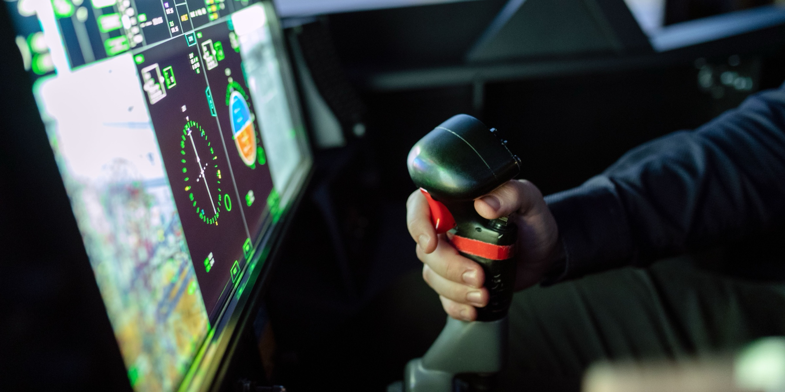
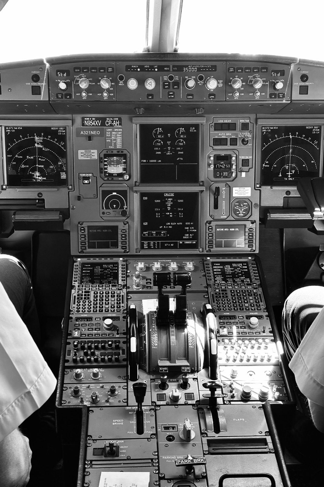

Case study · Defence
The interface between pilot and aircraft
A test-and-evaluation programme for a new military rotorcraft's cockpit and mission systems, assessing how those systems held up in the air with real crews flying them.
A note on this case study: this was a classified defence programme. The aircraft, its systems, and the testing results themselves can't be shared. What follows describes my role, the team, the process, and the high-level outcome only. Photos on this page are stock imagery, not the programme's aircraft or testing.

The programme
A cockpit is only as safe as the interface between pilot and system
I joined as HMI Engineer for avionics and mission systems on a test-and-evaluation programme for a new military rotorcraft. The brief went beyond individual instruments and controls. We were assessing how the cockpit and mission systems behaved as part of the whole aircraft, in the hands of the crews who would fly and operate it.
The team spanned a lot of disciplines. Test pilots and aircrew who would operate the systems. Manufacturer subject-matter experts who built them. MoD stakeholders who owned the requirements and carried the risk. Systems engineers, project management, and the ground and radio equipment operators who supported every trial.
The approach
Desk research, then ground trials, then the aircraft itself
The evaluation ran in stages, each one reducing the risk of the next. Desk and document research came first, to establish what the systems were meant to do and where the documentation left gaps. Ground trials followed, working through interactions and edge cases before anything left the ground. Flight test came last, which is where workload and interaction assessment finally happened in the conditions that mattered.
Rather than being handed a finished test plan, I worked alongside test pilots and aircrew to write the plans. You can't judge an interface from a document. You judge it against what crews need under operational conditions, which meant getting close to that judgment early counted for more than any single test script.

Stock image. The density of an integrated avionics environment.
Stock image. Simulator work, close to the ground trials that preceded flight test.
The challenges
Safety-critical, multi-agency, and thin on documentation
Safety-critical constraints
Every change to test scope or method had to hold up against strict safety-critical guidelines. There was no room for a "we'll fix it later" iteration cycle.
Translating operational language
Aircrew described problems in operational terms. Turning that into concrete, testable interface criteria meant translating between two vocabularies that rarely lined up.
Multi-agency coordination
Planning trials meant coordinating across several agencies, bodies and operators at once. Scheduling, sign-off and logistics were as much of a design problem as the interface.
Sparse manufacturer documentation
Accessible documentation from the manufacturer was often limited, which pushed more of the discovery work into direct, hands-on investigation rather than desk research alone.
The outcome
Findings that shaped both the aircraft's sign-off and its future design
The evaluation's findings fed directly into the aircraft's sign-off. I co-authored a report for MoD senior leadership advising on the best operational safety window for the aircraft and its equipment, grounded in what the trials had shown about how the systems and their operators performed together.
The work also produced recommendations back to the manufacturer on how future aircraft systems should be designed and implemented, aimed at the programmes that came after this one.
Reflection
The human factor doesn't show up in a spec sheet
This was the project that pushed me toward design. Working that closely with the people operating safety-critical systems showed me where the hard problems sat. Not in the systems themselves, but in the interface between a system and the person depending on it under pressure. I've been working on that problem ever since.